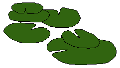
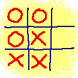
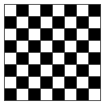
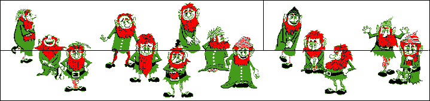

Click Here to Visit our Sponsor
Logical Puzzles
|

|
The puzzles are marked with stars ( ) that show the degree of difficulty of the given puzzle.
) that show the degree of difficulty of the given puzzle.
![[BACK]](left.gif) back to the main puzzle page.
back to the main puzzle page.

i.
The Wolf, the Goat, and the Cabbage
A man has a wolf, a goat, and a cabbage.
He must cross a river with the two animals and the cabbage.
There is a small rowing-boat, in which he can take only one thing with him at a time.
If, however, the wolf and the goat are left alone, the wolf will eat the goat.
If the goat and the cabbage are left alone, the goat will eat the cabbage.
The Question:
How can the man get across the river with the two animals and the cabbage?
The Answer:
 Click here!...
Click here!...
![[UP]](back.gif) back to index
back to index
ii.
Absurd Answers 
Here are three answers:
- Answer A
- Answer A or B
- Answer B or C
The Question:
There is only one correct answer to this question. Which answer is this?
The Answer:
Click here!...
back to index

iii.
Growing Water-Lily
In the middle of a round pool
lies a beautiful water-lily. The water-lily doubles in size every day.
After exactly 20 days the complete pool will be covered by the lily.
The Question:
After how many days will half of the pool be covered by the water-lily?
The Answer:
Click here!...
back to index
iv.
Jolly Jugs
You are standing next to a well, and you have two jugs.
One jug has a content of 3 liters and the other one has a content of 5 liters.
The Question:
How can you get just 4 liters of water using only these two jugs?
The Answer:
Click here!...
back to index
v.
Thoughtless Thief
A rather silly car thief stole, without knowing it, the car of the chief of police.
The police immediately started an investigation and on the basis of witness depositions,
four suspects were arrested that were seen near the car at the time of the crime.
Because the chief of police took the case very seriously, he decided to examine
the suspects personally and use the new lie-detector of the police station.
Each suspect gave three statements during the examinations, that are listed below:
Suspect A:
- In high-school I was in the same class as suspect C.
- Suspect B is the guilty one.
- The thief didn't know that it was the car of the chief of police.
Suspect B:
- Suspect C is the guilty one.
- Suspect A is not guilty.
- I didn't do it.
Suspect C:
- I never met suspect A until today.
- Suspect B is innocent.
- Suspect D has a driving license.
Suspect D:
- Suspect C is innocent.
- I never sat behind the wheel of a car.
- Suspect A is the guilty one.
With so many contradicting statements, the chief of police lost track.
To make things worse, it appeared that the lie-detector didn't quite work yet as it
should, because the machine only reported that exactly 6 of the 12 statements were true,
but not which ones.
The Question:
Who is the car thief?
The Answer:
Click here!...
back to index

vi.
Tick-Tack-Toe
David and Angela play a game of tick-tack-toe.
In this game, the players try to get three circles or three crosses in a row
(horizontal, vertical, or diagonal).
They follow the following rules:
- A player always tries to win: if a player can place his own symbol (X or O)
in a row which already contains two of his own symbols, he will do so.
- A player always tries to avoid that his opponent wins: if a player can place
his own symbol (X or O) in a row which already contains two of the symbols of
his opponent, he will do so.
Of course, the first rule has precedence over the second rule,
because the game can be won in this way.
In the game shown on the right, 6 moves have been done.
David plays with crosses (X) and Angela plays with circles (0).
However, we don't know who started the game.
The Question:
Who will win this game?
The Answer:
Click here!...
back to index
vii.
The Round Table
Yesterday evening, Helen and her husband invited their neighbours (two couples)
for a dinner at home.
The six of them sat at a round table. Helen tells you the following:
- "Victor sat on the left of the woman who sat on the left of the man who
sat on the left of Anna.
- Esther sat on the left of the man who sat on the left of the woman who
sat on the left of the man who sat on the left of the woman who
sat on the left of my husband.
- Jim sat on the left of the woman who sat on the left of Roger.
- I did not sit beside my husband."
The Question:
What is the name of Helen's husband?
The Answer:
Click here!...
back to index

viii.
Happy Handshaking
Jack and his wife went to a party where four other married couples were present.
Every person shook hands with everyone he or she was not acquainted with.
When the handshaking was over, Jack asked everyone, including his own wife,
how many hands they shook.
To his surprise, Jack got nine different answers.
The Question:
How many hands did Jack's wife shake?
The Answer:
Click here!...
back to index
ix.
Lighting Bulb
A light bulb is hanging in a room. Outside of the room there are
three switches, of which only one is connected to the lamp. In the
starting situation, all switches are 'off' and the bulb is not lit.
The Question:
If it is allowed to check in the room only once to see if the bulb
is lit or not (this is not visible from the outside), how can you
determine with which of the three switches the light bulb can be
switched on?
The Answer:
Click here!...
back to index
x.
Apples and Pears
Tom has three boxes with fruits in his barn: one box with apples,
one box with pears, and one box with both apples and pears. The
boxes have labels that describe the contents, but none of these labels
is on the right box.
The Question:
How can Tom, by taking only one piece of fruit from one
box, determine what each of the boxes contains?
The Answer:
Click here!...
back to index
xi.
Fun with Fuses...
Assume that you have a number of long fuses,
of which you only know that they burn for exactly one hour after
you lighted them at one end. However, you don't know whether they
burn with constant speed, so the first half of the fuse can be
burnt in only ten minutes while the rest takes the other fifty
minutes to burn completely. Also assume that you have a lighter.
The Question:
How can you measure exactly
three quarters of an hour with these fuses?
A Hint:
Click here!...
A 2nd Hint:
Click here!...
The Answer:
Click here!...
back to index

xii.
Chess-board Chunks ![[New!]](new.gif)
On the right you see a paper with a chess-board print on it.
We want to cut the chess-board paper into pieces (over the lines!)
such that each piece has twice as much squares of one color than of the other color
(i.e. twice as much black squares as white squares
or twice as much white squares as black squares).
The Question:
Is this possible? Give a proof!
The Answer:
Click here!...
back to index

xiii.
Wagon Works
On the right you see a small shunting-yard with two wagons (blue and green) and one locomotive (red).
The wagons have a length of 5 meters, and the locomotive has a length of 10 meters.
The dead end between the buffer-stop and the switch on the lower left has a a length of 5 meters
(so the locomotive cannot change tracks on the lower left switch),
and the dead end between the switch and the buffer-stop on the lower right has a a length of 15 meters.
The locomotive can move forward and backward, and can both pull and push wagons.
The Question:
How must the locomotive shunt the wagons, to arrive in a situation where the wagons
have changed places and the locomotive is back in its starting position?
The Answer:
Click here!...
back to index
xiv.
Little Lies
Richard is a strange liar.
He lies on six days of the week, but on the seventh day
he always tells the truth. He made the following statements
on three successive days:
Day 1: "I lie on Monday and Tuesday."
Day 2: "Today, it's Thursday, Saturday, or Sunday."
Day 3: "I lie on Wednesday and Friday."
The Question:
On which day does Richard tell the truth?
The Answer:
Click here!...
back to index
xv.
Square Circles
Given are the following three equations:
 =
=

-
=

-
=
The Question:
How many circles is a square, if you take the ratios in the three
given equations; in other words: how many circles
should be on the dots below?
= ...
The Answer:
Click here!...
back to index

xvi.
Placing Bricks
Try to fill the total board (10x10-2) with bricks of
size 2 ( and
), so no overlaps,
no gaps, and no bricks crossing the borders.
and
), so no overlaps,
no gaps, and no bricks crossing the borders.
The Question:
Is this possible? (Proof!)
The Answer:
Click here!...
Another Question:
How many squares are present
in the picture of the board?
Another Answer:
Click here!...
back to index
xvii.
Troubled Traveler
A traveler, on his way to Eindhoven,
reaches a road junction, where he can turn left or right.
He knows that only one of the two roads leads to Eindhoven,
but unfortunately, he does not know which one. Fortunately, he
sees two twin-brothers standing at the road junction, and he
decides to ask them for directions.
The traveler knows that one of the two brothers
always tells the truth and the other one always lies.
Unfortunately, he does not know which one always tells the truth
and which one always lies.
The Question:
How can the traveler find out the way to Eindhoven by asking just one
question to one of the two brothers?
The Answer:
Click here!...
back to index
xviii.
Missing Man
Look at the figure below, which shows fifteen men.
The figure is subdivided into three areas (upper left, upper right, and the bottom half).

By exchanging the upper two parts of the figure, one gets the
figure below. This new figure however only shows fourteen men! (If you don't belief
what happened here: please print it, cut it, and try it out yourself!)

The Question:
Where did the missing man go?
The Answer:
Click here!...
back to index
xix.
Barbara's Boxes
Barbara has boxes in three sizes: large, standard, and small.
She puts 11 large boxes on a table.
She leaves some of these boxes empty, and in all the other boxes she puts
8 standard boxes.
She leaves some of these standard boxes empty, and in all the other standard
boxes she puts 8 (empty) small boxes.
Now, 102 of all the boxes on the table are empty.
The Question:
How many boxes has Barbara used in total?
The Answer:
Click here!...
back to index
xx.
Alien Alert...
There are three Federation Officers assigned to take
three hostile aliens to "Peace Talks" on another planet. However, they must
follow the following rules:
- They have only one small space ship.
- Only two individuals can ride in the space ship each time.
- All Federation Officers can pilot the space ship, but only one
alien can pilot the ship.
- If at any time there are both Federation Officers and aliens on a
planet, then there must always be more (or the same number of) Federation Officers
than aliens on that planet. This is because if there are more
aliens than Federation Officers, then the aliens will kill the
Federation Officers. Count any individual in the space ship when
it is on one planet as being on that planet.
- The one space ship is the only means of transportation.
There is no other way to get to the "Peace Talks". No one can
exit the space ship while it is in flight.
- To start off, all the Federation Officers and aliens are on the
same planet.
The Question:
Can all Federation Officers
and aliens get to the other planet alive, and if so: how?
The Answer:
Click here!...
back to index
xxi.
At School
The gentlemen Dutch, English, Painter, and Writer are all
teachers at the same secondary school.
Each teacher teaches two different subjects.
Furthermore:
- Three teachers teach Dutch language
- There is only one math teacher
- There are two teachers for chemistry
- Two teachers, Simon and mister English, teach history
- Peter doesn't teach Dutch language
- Steven is chemistry teacher
- Mister Dutch doesn't teach any course that is tought by Karl or mister Painter.
The Question:
What is the full name of each teacher and which two subjects does each one teach?
The Answer:
Click here!...
back to index
Click Here to Visit our Sponsor
Copyright © 1996-2005. RJE-productions. All rights reserved.